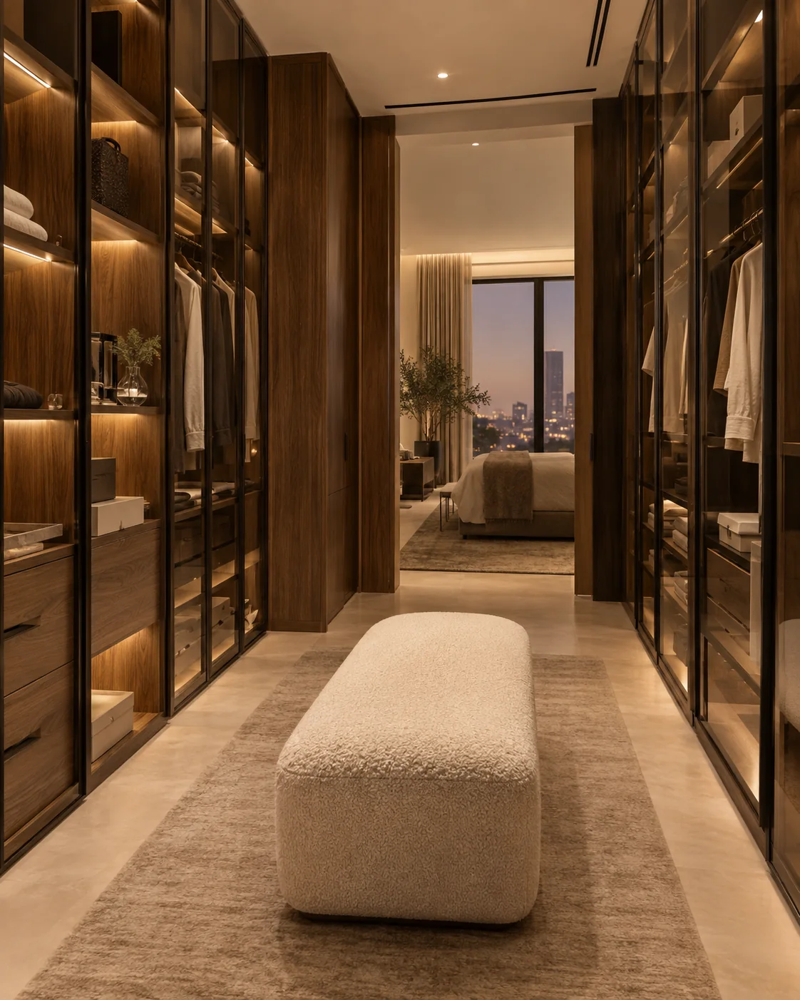
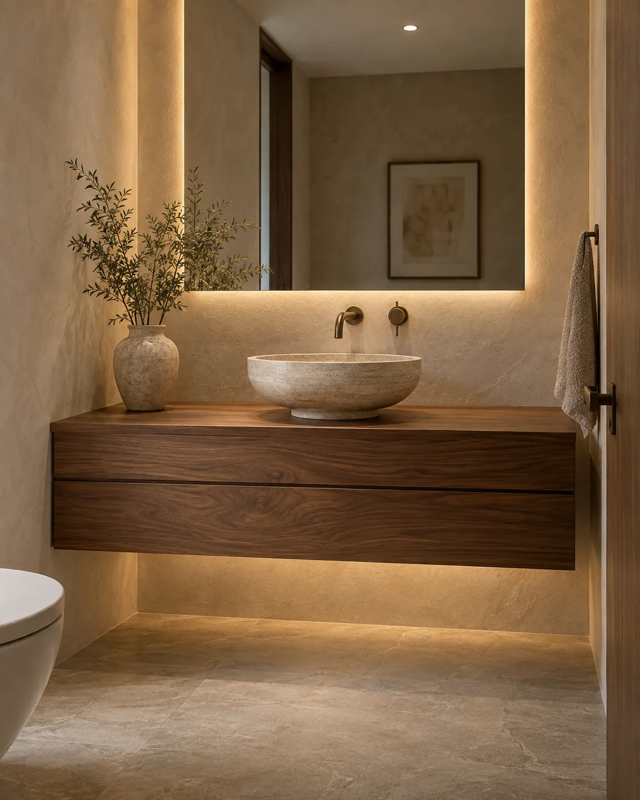

تصور بصري
تصور بصري01 / KITCHENS
مطابخ مصممة حول يومك.
تكوينات تراعي الحركة، التخزين، أماكن الأجهزة، والهوية البصرية للمساحة. ناقش المقاسات والخامات والملحقات المتاحة مباشرة مع الفرع.
مطابخ وخزائن ومغاسل، مع رحلة تصميم وتنفيذ تبدأ بفهم المساحة وطريقة استخدامها.

ما الذي تحتاج لتخزينه؟ كيف تتحرك داخل المساحة؟ ما الألوان القريبة لأسلوب بيتك؟ إجابات بسيطة تساعد على بناء تصور أكثر وضوحاً قبل مناقشة الخامات والميزانية والمدة مع الفريق.
تصور بصريتكوينات تراعي الحركة، التخزين، أماكن الأجهزة، والهوية البصرية للمساحة. ناقش المقاسات والخامات والملحقات المتاحة مباشرة مع الفرع.

تصور بصريحلول تنظيم مرنة تناسب احتياجات الغرفة وطريقة الاستخدام، مع عناية بالتقسيم الداخلي والتكامل مع شكل المكان.

تصور بصريوحدات تجمع بين الاستخدام العملي والمظهر المتناسق مع الفراغ؛ المقاسات والخيارات النهائية تُراجع مع الفريق حسب الموقع.
تصور بصريابدأ بصور ومقاسات تقريبية، ثم راجع التصور والتكوين والخامات والمدة والتكلفة مباشرة مع الفرع قبل الاعتماد.
الصورة توضّح الشكل، لكن الفيديو يكشف حركة الأبواب، سهولة الوصول، توزيع الإضاءة، وعلاقة كل وحدة بالمساحة.
كلما كانت البداية أوضح، أصبح من الأسهل مناقشة الخيارات المناسبة مع الفرع.
هذه الخطوات تنظّم بداية الحوار؛ تفاصيل آلية العمل النهائية يؤكدها الفرع.
المدينة والصور والمقاسات والاحتياج.
التكوين والستايل والأولويات العملية.
الخامات والملحقات والتكلفة والمدة.
ثبّت التفاصيل وجدول التنفيذ مع الفرع.
 اسأل عبر واتساب
اسأل عبر واتساب واتساب
واتساب